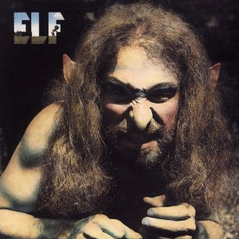
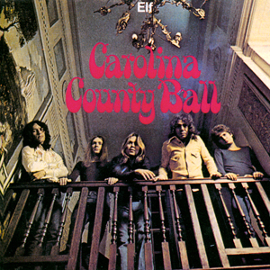
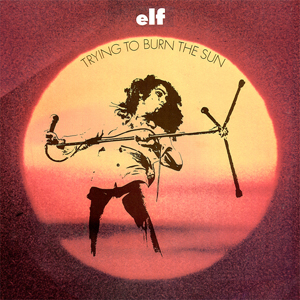
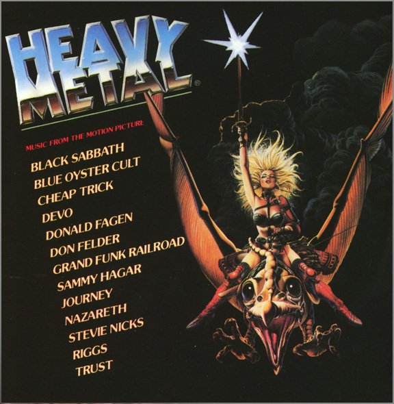

Ronnie James Dio
Metal God With Devil Horns
DISCOGRAPHY
BIO
HOME
Elf
Elf

1972
Elf
Carolina County Ball

1974
Elf
Trying To Burn The Sun

1975
Rainbow
Ritchie Blackmore's Rainbow
1975
Rainbow
Rising
1976
Rainbow
Long Live Rock 'n' Roll
1978
Black Sabbath
Heaven And Hell
1980
Black Sabbath
Heavy Metal Motion Picture Soundtrack

1981
Black Sabbath
The Mob Rules
1981
Dio
Holy Diver
1983
Dio
The Last in Line
1984
Dio
Sacred Heart
1985
Dio
Dream Evil
1987
Dio
Lock Up The Wolves
1990
Black Sabbath
Dehumanizer
1992
Dio
Strange Highways
1993
Dio
Angry Machines
1996
Dio
Magica
2000
Dio
Killing The Dragon
2002
Dio
Master of the Moon
2004
Heaven & Hell
The Devil You Know
2009
×
‹
›